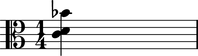
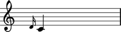
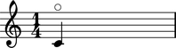
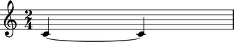
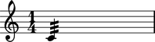

The Abjad _Leaf class
The Abjad _Leaf class models the functionality that all notes, rests, chords and skips share.
Public interface
Attributes
The Abjad _Leaf class is an abstract class and is not meant to be instantiated by hand.
But we show examples of _Leaf attributes here using note, rest and chords as concrete examples of the _Leaf class.
NOT IMPLEMENTED.
Read / write attribute defined here.
Returns Abjad _ArticulationsInterface.
Accepts Python list or Python tuple of zero or more LilyPond articulation strings, None.
abjad> note = Note(0, (1, 4))
abjad> note.articulations = ['staccato']

Read / write attribute inherited from _Component.
Returns Abjad _BarlineInterface.
Accepts LilyPond barline string, None.
See example.
abjad> chord = Chord([0, 2, 10], (1, 4))
abjad> chord.beam _BeamInterface
Read / write attribute defined here.
Returns Abjad _ClefInterface.
Accepts LilyPond clef string, Abjad _Clef instance, None.
abjad> chord = Chord([0, 2, 10], (1, 4))
abjad> chord.clef = 'alto'
abjad> chord = Chord([0, 2, 10], (1, 4))
abjad> chord.dots _DotsInterface
abjad> chord = Chord([0, 2, 10], (1, 4))
abjad> chord.duration.written = Rational(3, 8)

Read / write attribute defined here.
Returns Abjad _DynamicsInterface.
Accepts LilyPond dynamics string, None.
abjad> chord = Chord([0, 2, 10], (1, 4))
abjad> chord.dynamics = 'f'

abjad> chord = Chord([0, 2, 10], (1, 4))
abjad> chord.formatter _ChordFormatter
abjad> notes = [Note(0, (1, 4)), Note(2, (1, 4))]
abjad> notes[0].glissando = True

abjad> note = Note(0, (1, 4))
abjad> note.grace.before.append(Note(2, (1, 16)))
abjad> note = Note(0, (1, 4))
abjad> note.harmonic = True
abjad> note = Note(0, (1, 4))
abjad> note.leaves [Note(c', 4)]
abjad> note1 = Note(-1, (1, 4)) abjad> chord = Chord([0, 2, 10], (1, 4)) abjad> note2 = Note(9, (1, 4)) abjad> measure = Measure((1, 4), [note1, chord, note2])
abjad> chord.next Note(a', 4)

Read-only attribute defined here.
Returns zero-indexed integer representing the in-container position of chord.
abjad> measure = Measure((4, 4), [Note(x, (1, 8)) for x in range(8, 0, -1)])
abjad> measure[6].number 6

Read-only attribute defined here.
Returns Abjad Rational representing the amount of in-container musical time prior to the start of self.
abjad> measure = Measure((4, 4), [Note(x, (1, 8)) for x in range(8, 0, -1)])
abjad> measure[6].offset Rational(3, 4)

abjad> note1 = Note(-1, (1, 4)) abjad> chord = Chord([0, 2, 10], (1, 4)) abjad> note2 = Note(9, (1, 4)) abjad> measure = Measure((1, 4), [note1, chord, note2])
abjad> chord.prev Note(b, 4)

Read-only attribute defined here.
(Actually, the spanners attribute can be overwritten by the user. But don't do this.)
Returns Abjad _LeafSpannerInterface.
abjad> note = Note(0, (1, 4))
abjad> note.spanners _LeafSpannerInterface
Read / write attribute defined here.
Returns reference to the Abjad <_Staff>.
Accepts reference to Abjad <_Staff>.
Use for setting cross-staff notes, chords, rests.
abjad> note = Note(0, (1, 4))
abjad> note.staff is None True
abjad> note = Note(0, (1, 4))
abjad> note.stem _StemInterface
abjad> notes = Note(0, (1, 4)) * 2
abjad> notes[0].tie = True
abjad> note = Note(0, (1, 4))
abjad> note.tremolo.subdivision = 32
abjad> note = Note(0, (1, 4))
abjad> note.trill _TrillInterface
Methods
copy( )
Bound method inherited from _Component.
Returns a new copy of self.
Accepts no input parameters.
See example.
kind(classname)
Bound method inherited from _Component
Return True if classname in class hierarchy of self, and False otherwise.
DEPRECATED. Use isinstance instead.
See example.
Overloads
__mul__(n)
Special method inherited from _Component.
Implements left-handed multiplication against self.
Returns Python list of n copies of self.
See example.
__rmul__(n)
Special method inherited from _Component.
Implements right-handed multiplication against self.
Returns Python list of n copies of self.
See example.
Comments
To do
Should accidentals promote to a full interface?
Clean up the way staff works; is it a full interface or not?
Should we move formatter out of the 'interfaces' section?
See the
_Leafclass inleaf/leaf.pyfor implementation details.